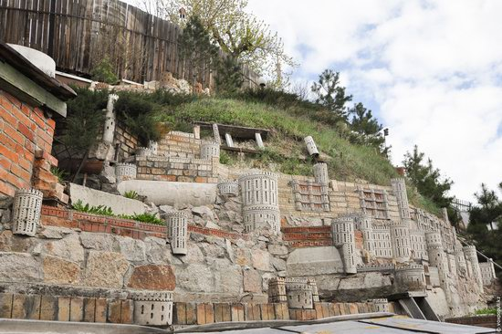
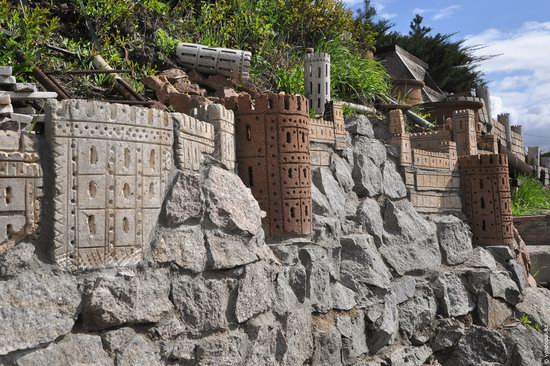
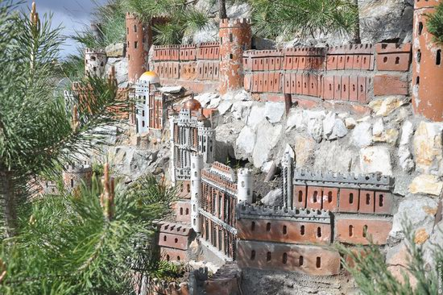
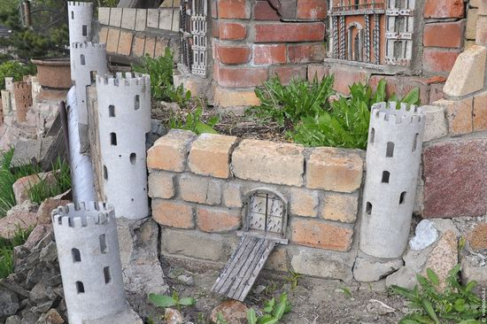
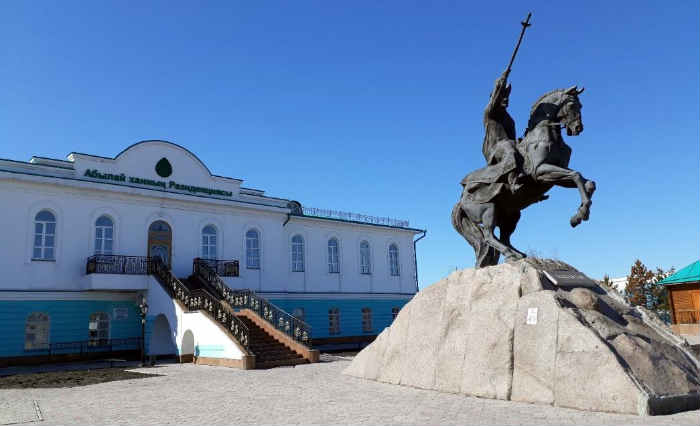
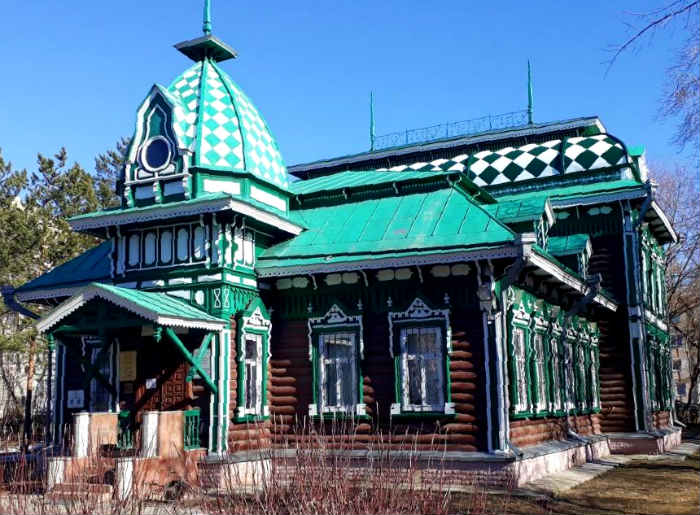

The Fayzulins family houses are located in the microdistrict of Podgora from where the city of Petropavl originates. The terrain here has a large slope. The head of the family, Anvar Galimovich Fayzulin, explains how he came up with such an unusual idea – to build castles literally in the air. He says: “I just did not want to live in a garbage dump.” Photos by: Vitaly Rezunov for voxpopuli.kz
“My son and I have no yards and gardens, there is a steep slope behind the fences, – says Anvar Fayzulin. – When I bought my house, this slope was just a dump, neighbors threw garbage there. I immediately decided that I would not live in a garbage dump. I had to landscape the slope. Then I didn’t think of making castles, but I knew that it must be clean and beautiful here!”
Years passed, the number of fortresses and castles increased. Anvar’s son Ruslan also became involved in his father’s passion. Having married, Ruslan bought a neighboring house and joined the beautification of the slope.
 Along Sutyushev stands the Residence of Ablai Khan. Originally built in 1829, it was financed by Catherine the Great as a place of residence for Ablai Khan who, although based in the south, was encouraged by Russia to regularly visit the city to encourage harmonious relations between the 2 ethnic groups. The building also served as a military hospital before falling into a state of disrepair, restored in the mid-2000s. The museum chronicles several aspects of Ablai’s life, his achievements, his battles with the Dzhungars, and his election in 1771 as “Khan of all Kazakhs”. There are re-creations of his bedroom, living room, throne room, personal belongings (some ostensibly original), along with an interesting comparison of his diplomatic relations with Tsarist Russia and with Qing China, which defeated the Dzhungars in 1758. Sutyushev street 1b, open Tue-Sun 10-18, 200 tenge entrance.
Approximately 1 km down Auezov Street is the beautiful Regional Museum of Fine Arts building, otherwise known as the “Yuzefovich merchant house”. Built in 1909 by a timber industry businessman, and restored in 1985, it features colourful green and white lozenge patterns set across a conjoined front and rear section, and houses prominent works of both local and nationally-recognized artists. Nearby, along Internatsionalnaya Street, stands the five-storey Muratova mill, built in 1904, now converted into a mixed-use development with a rooftop bar called “Beergrad”, and a staircase flanked with photos of old Petropavlovsk. The surrounding area is known as the “Eurasian bazaar”.
